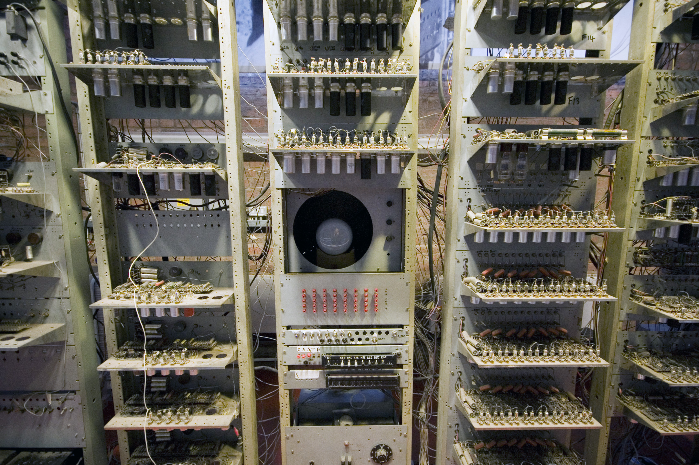
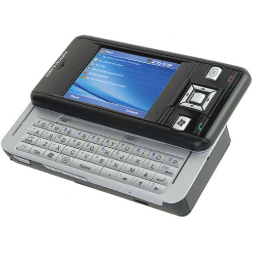

History
Pre-20th century
The Ishango bone, a bone tool dating back to prehistoric Africa.
Devices have been used to aid computation for thousands of years, mostly using one-to-one correspondence with fingers. The earliest counting device was probably a form of tally stick. Later record keeping aids throughout the Fertile Crescent included calculi (clay spheres, cones, etc.) which represented counts of items, probably livestock or grains, sealed in hollow unbaked clay containers. The use of counting rods is one example. The Chinese suanpan. The number represented on this abacus is 6,302,715,408.
The abacus was initially used for arithmetic tasks. The Roman abacus was developed from devices used in Babylonia as early as 2400 BC. Since then, many other forms of reckoning boards or tables have been invented. In a medieval European counting house, a checkered cloth would be placed on a table, and markers moved around on it according to certain rules, as an aid to calculating sums of money.
The Antikythera mechanism, dating back to ancient Greece circa 150–100 BC, is an early analog computing device.
The Antikythera mechanism is believed to be the earliest mechanical analog computer, according to Derek J. de Solla Price. It was designed to calculate astronomical positions. It was discovered in 1901 in the Antikythera wreck off the Greek island of Antikythera, between Kythera and Crete, and has been dated to c. 100 BC. Devices of a level of complexity comparable to that of the Antikythera mechanism would not reappear until a thousand years later.
The Chinese suanpan. The number represented on this abacus is 6,302,715,408.
The abacus was initially used for arithmetic tasks. The Roman abacus was developed from devices used in Babylonia as early as 2400 BC. Since then, many other forms of reckoning boards or tables have been invented. In a medieval European counting house, a checkered cloth would be placed on a table, and markers moved around on it according to certain rules, as an aid to calculating sums of money.
The Antikythera mechanism, dating back to ancient Greece circa 150–100 BC, is an early analog computing device.
The Antikythera mechanism is believed to be the earliest mechanical analog computer, according to Derek J. de Solla Price. It was designed to calculate astronomical positions. It was discovered in 1901 in the Antikythera wreck off the Greek island of Antikythera, between Kythera and Crete, and has been dated to c. 100 BC. Devices of a level of complexity comparable to that of the Antikythera mechanism would not reappear until a thousand years later.
First computing device
A portion of Babbage's Difference engine.
Charles Babbage, an English mechanical engineer and polymath, originated the concept of a programmable computer. Considered the "father of the computer", he conceptualized and invented the first mechanical computer in the early 19th century. After working on his revolutionary difference engine, designed to aid in navigational calculations, in 1833 he realized that a much more general design, an Analytical Engine, was possible.
 The input of programs and data was to be provided to the machine via punched cards, a method being used at the time to direct mechanical looms such as the Jacquard loom. For output, the machine would have a printer, a curve plotter and a bell. The machine would also be able to punch numbers onto cards to be read in later. The Engine incorporated an arithmetic logic unit, control flow in the form of conditional branching and loops, and integrated memory, making it the first design for a general-purpose computer that could be described in modern terms as Turing-complete.
The machine was about a century ahead of its time. All the parts for his machine had to be made by hand – this was a major problem for a device with thousands of parts. Eventually, the project was dissolved with the decision of the British Government to cease funding. Babbage's failure to complete the analytical engine can be chiefly attributed to political and financial difficulties as well as his desire to develop an increasingly sophisticated computer and to move ahead faster than anyone else could follow.
The input of programs and data was to be provided to the machine via punched cards, a method being used at the time to direct mechanical looms such as the Jacquard loom. For output, the machine would have a printer, a curve plotter and a bell. The machine would also be able to punch numbers onto cards to be read in later. The Engine incorporated an arithmetic logic unit, control flow in the form of conditional branching and loops, and integrated memory, making it the first design for a general-purpose computer that could be described in modern terms as Turing-complete.
The machine was about a century ahead of its time. All the parts for his machine had to be made by hand – this was a major problem for a device with thousands of parts. Eventually, the project was dissolved with the decision of the British Government to cease funding. Babbage's failure to complete the analytical engine can be chiefly attributed to political and financial difficulties as well as his desire to develop an increasingly sophisticated computer and to move ahead faster than anyone else could follow.
Analog computers
Sir William Thomson's third tide-predicting machine design, 1879–81
During the first half of the 20th century, many scientific computing needs were met by increasingly sophisticated analog computers, which used a direct mechanical or electrical model of the problem as a basis for computation. However, these were not programmable and generally lacked the versatility and accuracy of modern digital computers.
 The first modern analog computer was a tide-predicting machine, invented by Sir William Thomson in 1872. The differential analyser, a mechanical analog computer designed to solve differential equations by integration using wheel-and-disc mechanisms, was conceptualized in 1876 by James Thomson, the brother of the more famous Lord Kelvin.
The art of mechanical analog computing reached its zenith with the differential analyzer, built by H. L. Hazen and Vannevar Bush at MIT starting in 1927. This built on the mechanical integrators of James Thomson and the torque amplifiers invented by H. W. Nieman. A dozen of these devices were built before their obsolescence became obvious. By the 1950s, the success of digital electronic computers had spelled the end for most analog computing machines, but analog computers remained in use during the 1950s in some specialized applications such as education (slide rule) and aircraft (control systems).
The first modern analog computer was a tide-predicting machine, invented by Sir William Thomson in 1872. The differential analyser, a mechanical analog computer designed to solve differential equations by integration using wheel-and-disc mechanisms, was conceptualized in 1876 by James Thomson, the brother of the more famous Lord Kelvin.
The art of mechanical analog computing reached its zenith with the differential analyzer, built by H. L. Hazen and Vannevar Bush at MIT starting in 1927. This built on the mechanical integrators of James Thomson and the torque amplifiers invented by H. W. Nieman. A dozen of these devices were built before their obsolescence became obvious. By the 1950s, the success of digital electronic computers had spelled the end for most analog computing machines, but analog computers remained in use during the 1950s in some specialized applications such as education (slide rule) and aircraft (control systems).
Electromechanical
By 1938, the United States Navy had developed an electromechanical analog computer small enough to use aboard a submarine. This was the Torpedo Data Computer, which used trigonometry to solve the problem of firing a torpedo at a moving target. During World War II similar devices were developed in other countries as well. Replica of Zuse's Z3, the first fully automatic, digital computer.
Early digital computers were electromechanical; electric switches drove mechanical relays to perform the calculation. These devices had a low operating speed and were eventually superseded by much faster all-electric computers, originally using vacuum tubes. The Z2, created by German engineer Konrad Zuse in 1939, was one of the earliest examples of an electromechanical relay computer.[21]
In 1941, Zuse followed his earlier machine up with the Z3, the world's first working electromechanical programmable, fully automatic digital computer. The Z3 was built with 2000 relays, implementing a 22 bit word length that operated at a clock frequency of about 5–10 Hz. Program code was supplied on punched film while data could be stored in 64 words of memory or supplied from the keyboard. It was quite similar to modern machines in some respects, pioneering numerous advances such as floating point numbers. Rather than the harder-to-implement decimal system (used in Charles Babbage's earlier design), using a binary system meant that Zuse's machines were easier to build and potentially more reliable.
Replica of Zuse's Z3, the first fully automatic, digital computer.
Early digital computers were electromechanical; electric switches drove mechanical relays to perform the calculation. These devices had a low operating speed and were eventually superseded by much faster all-electric computers, originally using vacuum tubes. The Z2, created by German engineer Konrad Zuse in 1939, was one of the earliest examples of an electromechanical relay computer.[21]
In 1941, Zuse followed his earlier machine up with the Z3, the world's first working electromechanical programmable, fully automatic digital computer. The Z3 was built with 2000 relays, implementing a 22 bit word length that operated at a clock frequency of about 5–10 Hz. Program code was supplied on punched film while data could be stored in 64 words of memory or supplied from the keyboard. It was quite similar to modern machines in some respects, pioneering numerous advances such as floating point numbers. Rather than the harder-to-implement decimal system (used in Charles Babbage's earlier design), using a binary system meant that Zuse's machines were easier to build and potentially more reliable.
Vacuum tubes and digital electronic circuits
Purely electronic circuit elements soon replaced their mechanical and electromechanical equivalents, at the same time that digital calculation replaced analog. The engineer Tommy Flowers, working at the Post Office Research Station in London in the 1930s, began to explore the possible use of electronics for the telephone exchange. Experimental equipment that he built in 1934 went into operation five years later, converting a portion of the telephone exchange network into an electronic data processing system, using thousands of vacuum tubes.
 In the US, John Vincent Atanasoff and Clifford E. Berry of Iowa State University developed and tested the Atanasoff–Berry Computer in 1942 the first "automatic electronic digital computer".This design was also all-electronic and used about 300 vacuum tubes, with capacitors fixed in a mechanically rotating drum for memory.
Two women are seen by the Colossus computer.
Colossus, the first electronic digital programmable computing device, was used to break German ciphers during World War II.
During World War II, the British at Bletchley Park achieved a number of successes at breaking encrypted German military communications. The German encryption machine, Enigma, was first attacked with the help of the electro-mechanical bombes which were often run by women.[31][32] To crack the more sophisticated German Lorenz SZ 40/42 machine, used for high-level Army communications, Max Newman and his colleagues commissioned Flowers to build the Colossus.[30] He spent eleven months from early February 1943 designing and building the first Colossus.[33] After a functional test in December 1943, Colossus was shipped to Bletchley Park, where it was delivered on 18 January 1944 and attacked its first message on 5 February
In the US, John Vincent Atanasoff and Clifford E. Berry of Iowa State University developed and tested the Atanasoff–Berry Computer in 1942 the first "automatic electronic digital computer".This design was also all-electronic and used about 300 vacuum tubes, with capacitors fixed in a mechanically rotating drum for memory.
Two women are seen by the Colossus computer.
Colossus, the first electronic digital programmable computing device, was used to break German ciphers during World War II.
During World War II, the British at Bletchley Park achieved a number of successes at breaking encrypted German military communications. The German encryption machine, Enigma, was first attacked with the help of the electro-mechanical bombes which were often run by women.[31][32] To crack the more sophisticated German Lorenz SZ 40/42 machine, used for high-level Army communications, Max Newman and his colleagues commissioned Flowers to build the Colossus.[30] He spent eleven months from early February 1943 designing and building the first Colossus.[33] After a functional test in December 1943, Colossus was shipped to Bletchley Park, where it was delivered on 18 January 1944 and attacked its first message on 5 February
Concept of modern computer
The principle of the modern computer was proposed by Alan Turing in his seminal 1936 paper,On Computable Numbers. Turing proposed a simple device that he called "Universal Computing machine" and that is now known as a universal Turing machine. He proved that such a machine is capable of computing anything that is computable by executing instructions (program) stored on tape, allowing the machine to be programmable.

The fundamental concept of Turing's design is the stored program, where all the instructions for computing are stored in memory. Von Neumann acknowledged that the central concept of the modern computer was due to this paper.Turing machines are to this day a central object of study in theory of computation. Except for the limitations imposed by their finite memory stores, modern computers are said to be Turing-complete, which is to say, they have algorithm execution capability equivalent to a universal Turing machine.
Stored programs
Main article: Stored-program computer
Three tall racks containing electronic circuit boards
A section of the Manchester Baby, the first electronic stored-program computer
Early computing machines had fixed programs. Changing its function required the re-wiring and re-structuring of the machine.[30] With the proposal of the stored-program computer this changed. A stored-program computer includes by design an instruction set and can store in memory a set of instructions (a program) that details the computation. The theoretical basis for the stored-program computer was laid by Alan Turing in his 1936 paper. In 1945, Turing joined the National Physical Laboratory and began work on developing an electronic stored-program digital computer. His 1945 report "Proposed Electronic Calculator" was the first specification for such a device. John von Neumann at the University of Pennsylvania also circulated his First Draft of a Report on the EDVAC in 1945.
Transistors
Bipolar junction transistor (BJT)
The concept of a field-effect transistor was proposed by Julius Edgar Lilienfeld in 1925. John Bardeen and Walter Brattain, while working under William Shockley at Bell Labs, built the first working transistor, the point-contact transistor, in 1947, which was followed by Shockley's bipolar junction transistor in 1948. From 1955 onwards, transistors replaced vacuum tubes in computer designs, giving rise to the "second generation" of computers. Compared to vacuum tubes, transistors have many advantages: they are smaller, and require less power than vacuum tubes, so give off less heat. Junction transistors were much more reliable than vacuum tubes and had longer, indefinite, service life. Transistorized computers could contain tens of thousands of binary logic circuits in a relatively compact space. However, early junction transistors were relatively bulky devices that were difficult to manufacture on a mass-production basis, which limited them to a number of specialised applications
Mobile computers
The first mobile computers were heavy and ran from mains power. The 50lb IBM 5100 was an early example.
Later portables such as the Osborne 1 and Compaq Portable were considerably lighter but still needed to be plugged in. The first laptops, such as the Grid Compass, removed this requirement by incorporating batteries – and with the continued miniaturization of computing resources and advancements in portable battery life, portable computers grew in popularity in the 2000s. The same developments allowed manufacturers to integrate computing resources into cellular mobile phones by the early 2000s.
These smartphones and tablets run on a variety of operating systems and recently became the dominant computing device on the market.[92] These are powered by System on a Chip (SoCs), which are complete computers on a microchip the size of a coin
ㅤㅤ
ㅤㅤㅤㅤㅤㅤㅤㅤㅤㅤㅤㅤㅤㅤㅤㅤㅤ